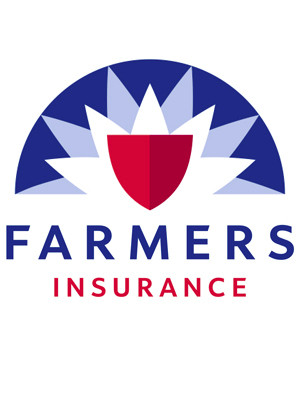

Portfolio
Expertise in ink, toner, and printer sales, pricing strategies, client relations and needs assessment, marketing, financial management, purchasing, administration, and staff training, supervision, motivation and mentoring. Assisted sales representatives in developing long term and daily territory
Sold life, health, disability, and long-term care insurance products and annuities as an affiliate of a $10 billion company. Prepared profiles on potential clients and secured in-home appointments. Established rapport and trust. Presented and sold appropriate insurance products. Licensed Insurance Agent and a Notary Public
The goal of Wellington Grams, LLC is to establish a hemp farm in Tennessee with the intent of manufacturing various products such as CBD oil, plastic, clothing, and other green related products. Another goal of Wellington Grams, LLC is to place the company in a position to be on the forefront once medicinal/recreational marijuana becomes legal in Tennessee.